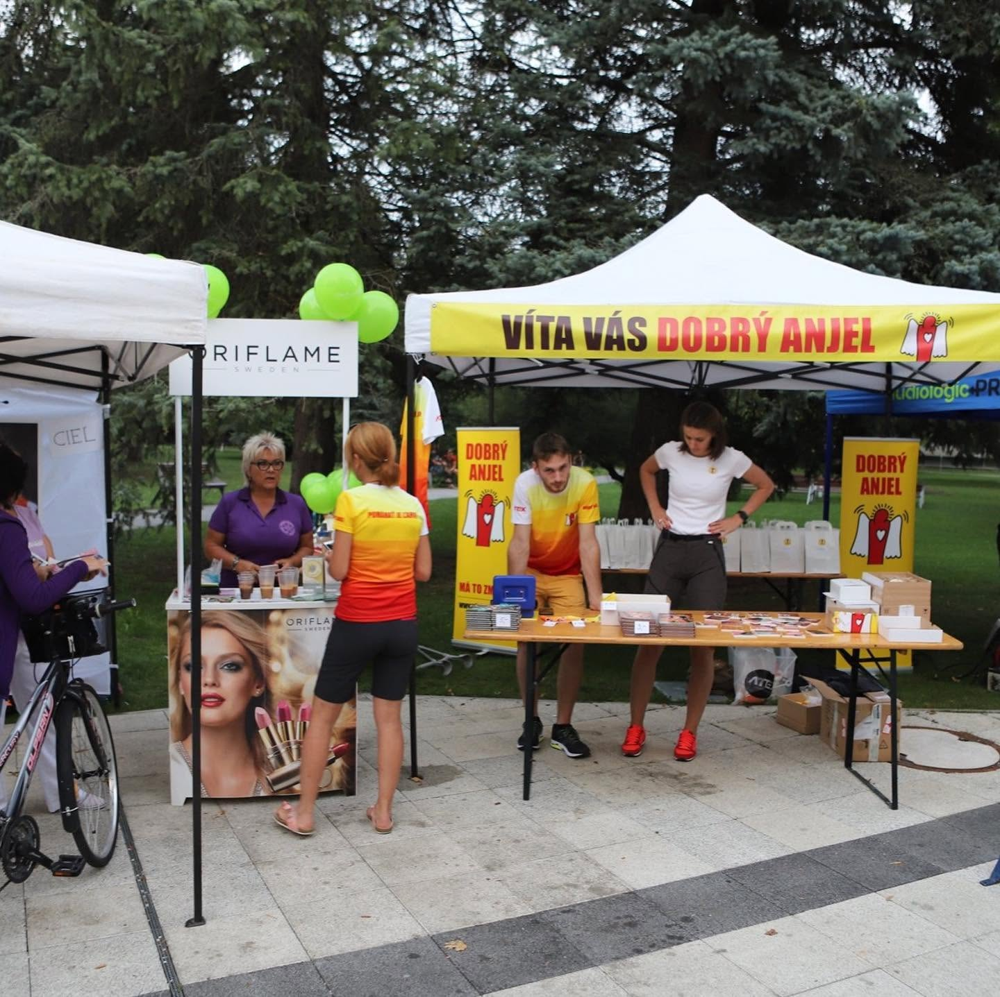
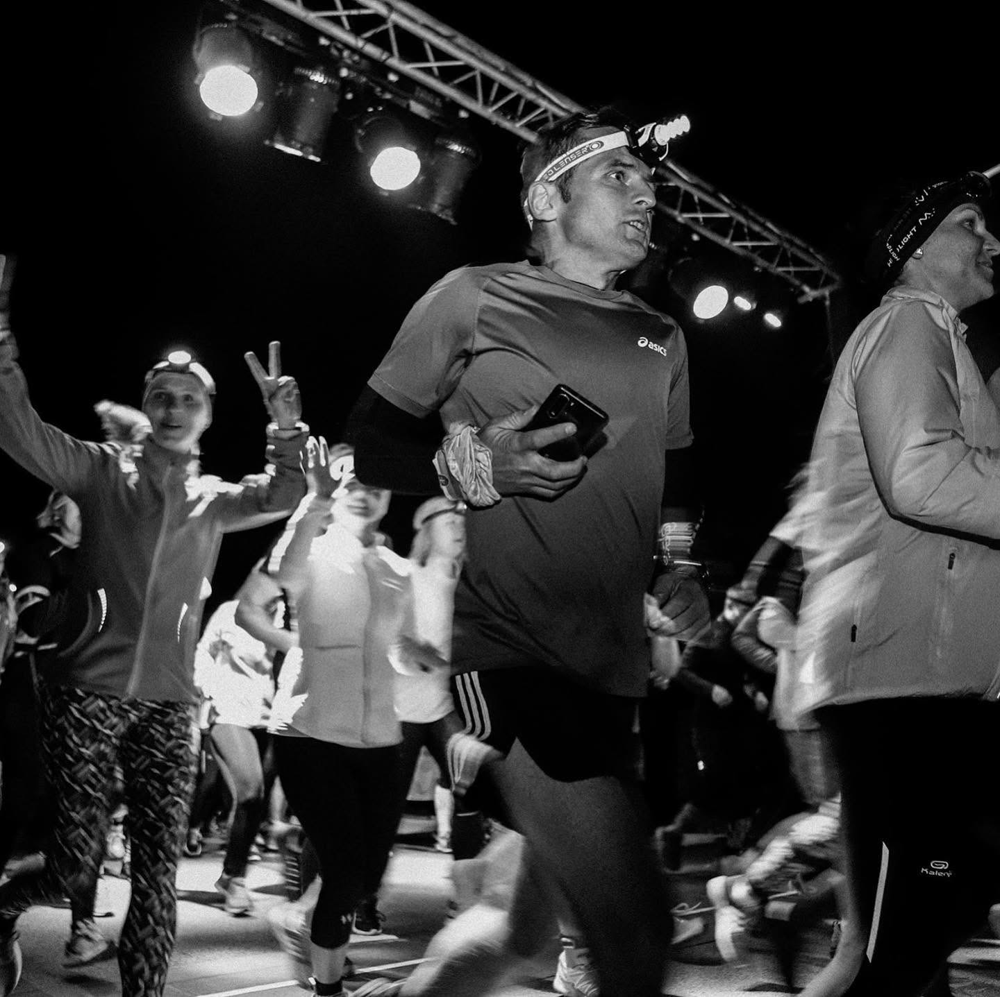

<!DOCTYPE html>
<html lang="sk">
<head>
  <meta charset="UTF-8" />
  <meta name="viewport" content="width=device-width, initial-scale=1.0" />
  <title>Modrý oceán — občianske združenie | Žilina</title>
  <meta name="description" content="Občianske združenie Modrý oceán spája ľudí s dobrým srdcom. Charitatívna a sociálna pomoc, komunitné a športové podujatia ako Anjelský Zebra Night Run, osveta a rozvoj mládeže v regióne Žilina." />
  <meta name="theme-color" content="#000000" />
  <link rel="icon" href="data:image/svg+xml,%3Csvg xmlns='http://www.w3.org/2000/svg' viewBox='0 0 32 32'%3E%3Crect width='32' height='32' rx='8' fill='%23000'/%3E%3Cpath d='M4 20c3-3 5-3 8 0s5 3 8 0 5-3 8 0' stroke='%2338bdf8' stroke-width='2.5' fill='none' stroke-linecap='round'/%3E%3Cpath d='M4 13c3-3 5-3 8 0s5 3 8 0 5-3 8 0' stroke='%230ea5e9' stroke-width='2.5' fill='none' stroke-linecap='round' opacity='.55'/%3E%3C/svg%3E" />

  <meta property="og:type" content="website" />
  <meta property="og:locale" content="sk_SK" />
  <meta property="og:title" content="Modrý oceán — občianske združenie" />
  <meta property="og:description" content="Spájame ľudí s dobrým srdcom. Prinášame trvalé verejnoprospešné hodnoty pre miestnu komunitu a jej široké okolie." />
  <meta property="og:image" content="obrazky/bezci-noc.jpg" />
  <meta name="twitter:card" content="summary_large_image" />

  <link rel="preconnect" href="https://fonts.googleapis.com" />
  <link rel="preconnect" href="https://fonts.gstatic.com" crossorigin />
  <link href="https://fonts.googleapis.com/css2?family=Geist:wght@300;400;500;600;700&display=swap" rel="stylesheet" />

  <script src="https://cdn.tailwindcss.com"></script>
  <script>
    tailwind.config = {
      theme: {
        extend: {
          fontFamily: { geist: ['Geist', 'sans-serif'] },
          colors: {
            ocean: { 300: '#7dd3fc', 400: '#38bdf8', 500: '#0ea5e9', 950: '#050a12' }
          }
        }
      }
    };
  </script>

  <style>
    * { margin: 0; padding: 0; box-sizing: border-box; }

    html { scroll-behavior: smooth; }

    body {
      -webkit-font-smoothing: antialiased;
      -moz-osx-font-smoothing: grayscale;
      background-color: #000;
    }

    section[id] { scroll-margin-top: 72px; }

    ::selection { background: #38bdf8; color: #000; }

    @keyframes fadeSlideUp {
      from {
        opacity: 0;
        transform: translateY(24px);
      }
      to {
        opacity: 1;
        transform: translateY(0);
      }
    }

    :focus-visible {
      outline: 2px solid #38bdf8;
      outline-offset: 3px;
      border-radius: 4px;
    }

    @media (prefers-reduced-motion: reduce) {
      html { scroll-behavior: auto; }
      *, *::before, *::after {
        animation-duration: 0.001ms !important;
        animation-delay: 0ms !important;
        transition-duration: 0.001ms !important;
      }
    }
  </style>
</head>
<body>
  <div id="root"></div>

  <script src="https://unpkg.com/react@18.3.1/umd/react.production.min.js" crossorigin></script>
  <script src="https://unpkg.com/react-dom@18.3.1/umd/react-dom.production.min.js" crossorigin></script>
  <!-- UMD build lucide-react hľadá React pod globálnym názvom "react" (malé r) -->
  <script>window.react = window.React;</script>
  <script src="https://unpkg.com/lucide-react@0.263.1/dist/umd/lucide-react.js" crossorigin></script>
  <script src="https://unpkg.com/@babel/standalone@7.25.6/babel.min.js" crossorigin></script>

  <script type="text/babel" data-presets="react">
    const { useState, useEffect, useRef } = React;
    const {
      ArrowRight, Menu, X, HeartHandshake, Footprints, Sparkles,
      Mail, MapPin, Building2, Calendar, ChevronLeft, ChevronRight
    } = LucideReact;

    /* ------------------------------------------------------------------ */
    /*  Obsah                                                              */
    /* ------------------------------------------------------------------ */

    const EMAIL = 'tibor.lettrich@gmail.com';

    // Video pozadia hero sekcie. Ak raz prestane byt dostupne, staci vymenit tuto jednu URL.
    const VIDEO_SRC =
      'https://d8j0ntlcm91z4.cloudfront.net/user_38xzZboKViGWJOttwIXH07lWA1P/hf_20260622_204221_5339e40b-e73d-4ab0-9c65-79c18c66fd50.mp4';

    // Subor ma 8,04 s, ale skutocna slucka v nom trva len ~4,96 s — na tom mieste je
    // do videa zapeceny tvrdy strih spat na zaciatok (merane: rozdiel medzi susednymi
    // snimkami tam vyskoci z bezných ~1 na 6,7 a snimok 5,00 s je zhodny so snimkom 0).
    // Zvysok suboru je len opakovanie zaciatku. Slucku preto ukoncujeme tesne PRED tym
    // strihom, aby sa nikdy neprehral.
    //
    // Pri vymene videa toto cislo uprav alebo nastav na null (= pouzije sa cela dlzka).
    const VIDEO_LOOP_END = 4.92;

    // Slucka ma len ~4,9 s, takze pri normalnej rychlosti by prelnutie prichadzalo
    // kazdych ~4,1 s — prilis casto. Spomalenim na 0,6x trva slucka ~8,2 s realneho
    // casu a prelnutie vychadza raz za ~6,9 s. Pokojnejsi pohyb sceny tomuto zaberu
    // aj svedci a video je bez zvuku, takze nie je co pokazit. 1 = povodna rychlost.
    const VIDEO_RATE = 0.8;

    const NAV_LINKS = [
      { label: 'Domov', href: '#domov' },
      { label: 'Naša činnosť', href: '#cinnost' },
      { label: 'Podujatia', href: '#podujatia' },
      { label: 'Kontakt', href: '#kontakt' },
    ];

    const PILIERE = [
      {
        icon: HeartHandshake,
        cislo: '01',
        nadpis: 'Charitatívna a sociálna činnosť',
        body: [
          {
            titulok: 'Priama pomoc v regióne',
            text: 'Realizujeme cielené materiálne a finančné zbierky pre rodiny, samoživiteľov a jednotlivcov v núdzi priamo v našom regióne a v blízkom okolí.',
          },
          {
            titulok: 'Solidarita v praxi',
            text: 'Vďaka dôkladnej znalosti miestneho prostredia dokážeme reagovať rýchlo, adresne a zabezpečiť, aby sa vyzbierané prostriedky dostali priamo do rúk tým, ktorí čelia ťažkým životným či zdravotným osudom.',
          },
          {
            titulok: 'Celoslovenský presah',
            text: 'Spolupráca s renomovanými celoslovenskými charitatívnymi organizáciami. Príkladom je naše partnerstvo na podujatí s nadáciou Dobrý Anjel, čím znásobujeme silu a dosah našej pomoci.',
          },
        ],
      },
      {
        icon: Footprints,
        cislo: '02',
        nadpis: 'Komunitné a športové podujatia',
        body: [
          {
            titulok: 'Pohybom k lepšiemu svetu',
            text: 'Stojíme za úspešnou realizáciou verejných športovo-charitatívnych podujatí, ktoré prebúdzajú k životu verejný priestor a spájajú komunitu.',
          },
          {
            titulok: 'Nezabudnuteľné zážitky',
            text: 'Našou vlajkovou loďou je spoluorganizácia populárnych nočných behov, akým je napríklad Anjelský Zebra Night Run. Tieto podujatia priťahujú bežcov aj rodiny s deťmi z celého regiónu.',
          },
          {
            titulok: 'Skutočný zmysel',
            text: 'Každý odbehnutý kilometer a každé štartovné pre nás znamenajú viac než len športový výkon. Naše športové akcie úspešne spájajú propagáciu zdravého pohybu s priamou finančnou a morálnou podporou pre choré a znevýhodnené deti.',
          },
        ],
      },
      {
        icon: Sparkles,
        cislo: '03',
        nadpis: 'Osvetová činnosť a rozvoj mládeže',
        body: [
          {
            titulok: 'Inšpirácia pre novú generáciu',
            text: 'Sústredíme sa na propagáciu aktívneho občianstva, zdravého životného štýlu a prevencie civilizačných chorôb či sociálneho vylúčenia.',
          },
          {
            titulok: 'Moderný prístup k osvete',
            text: 'Využívame digitálne platformy a sociálne siete na to, aby sme mladým ľuďom ukazovali zmysluplné alternatívy trávenia voľného času a dôležitosť solidarity v modernej spoločnosti.',
          },
          {
            titulok: 'Budovanie hodnôt',
            text: 'Motivujeme mládež v regióne k tomu, aby sa nebála prevziať iniciatívu, zapájala sa do dobrovoľníctva a aktívne sa podieľala na skrášľovaní a rozvoji svojho domova.',
          },
        ],
      },
    ];

    const GALERIA = [
      { src: 'obrazky/bezci-noc.jpg', alt: 'Bežci na štarte nočného behu Anjelský Zebra Night Run', wide: true },
      { src: 'obrazky/start-brana.jpg', alt: 'Štartovacia brána pripravená pred začiatkom behu' },
      { src: 'obrazky/dobry-anjel.jpg', alt: 'Stánok nadácie Dobrý Anjel v areáli podujatia' },
      { src: 'obrazky/start-brana-2.jpg', alt: 'Účastníci podujatia pri štartovacej bráne' },
      { src: 'obrazky/medaily.jpg', alt: 'Drevené medaily pre bežcov, Turčianske Teplice 20. 08. 2021' },
    ];

    /* ------------------------------------------------------------------ */
    /*  Pomocné komponenty                                                 */
    /* ------------------------------------------------------------------ */

    function Reveal({ children, delay = 0, className = '', as: Tag = 'div' }) {
      const ref = useRef(null);
      const [visible, setVisible] = useState(false);

      useEffect(() => {
        const el = ref.current;
        if (!el) return;
        const io = new IntersectionObserver(
          ([entry]) => {
            if (entry.isIntersecting) {
              setVisible(true);
              io.disconnect();
            }
          },
          { threshold: 0.12, rootMargin: '0px 0px -60px 0px' }
        );
        io.observe(el);
        return () => io.disconnect();
      }, []);

      return (
        <Tag
          ref={ref}
          className={className}
          style={visible ? { animation: `fadeSlideUp 0.8s ease ${delay}s both` } : { opacity: 0 }}
        >
          {children}
        </Tag>
      );
    }

    function Eyebrow({ children }) {
      return (
        <div className="mb-4 flex items-center gap-3">
          <span className="h-px w-8 bg-ocean-400" />
          <span className="text-xs font-medium uppercase tracking-[0.2em] text-ocean-400">
            {children}
          </span>
        </div>
      );
    }

    function MailButton({ className = '', children }) {
      return (
        <a
          href={`mailto:${EMAIL}`}
          className={`inline-flex items-center gap-2 rounded-lg bg-white px-5 py-2 text-sm font-medium text-black transition-transform hover:scale-105 ${className}`}
        >
          {children}
        </a>
      );
    }

    /*
     * Video pozadie s plynulou slucku.
     *
     * Natívny atribút loop skoci na zaciatok jednym snimkom a ten strih je vidno.
     * Namiesto toho drzime dve prekryte kopie videa: ked sa aktivnej blizi koniec,
     * druha sa spusti od nuly a vrstvy sa do seba prelnu (crossfade).
     *
     * Aby bol prechod naozaj neviditelny, musia platit tri veci:
     *   1. odchadzajucemu videu sa vypne loop, aby sa nemohlo prehodit na prvy
     *      snimok, kym je este cast krytia vidiet,
     *   2. casovanie riadi requestAnimationFrame (~60 Hz), nie timeupdate (~4 Hz),
     *      ktory meskal az o 250 ms a prelnutie potom nestihlo dobehnut,
     *   3. prichadzajuca kopia sa na nulu preseekuje s predstihom, takze v momente
     *      objavovania uz stoji na prvom snimku.
     *
     * Atribut loop v JSX ostava kvoli pripadu, ze by JS vobec nenabehol — vtedy sa
     * prva kopia toci natívne, teda povodne spravanie, nikdy prazdna plocha.
     */
    function LoopingVideo({ src, poster, objectPosition = 'center', loopEnd = null, rate = 1 }) {
      const aRef = useRef(null);
      const bRef = useRef(null);
      const [twin, setTwin] = useState(false); // druha kopia sa pripoji az po rozbehnuti prvej
      const [fade, setFade] = useState(1.2); // dlzka prelnutia v sekundach
      const [frontIsA, setFrontIsA] = useState(true);

      // Kde slucka realne konci — bud rucne zadany bod, alebo koniec suboru.
      const endOf = (v) => {
        const d = v.duration;
        if (!d || !isFinite(d)) return null;
        return loopEnd && isFinite(loopEnd) && loopEnd > 0 && loopEnd < d ? loopEnd : d;
      };

      const reduced = useRef(
        typeof window !== 'undefined' &&
          !!window.matchMedia &&
          window.matchMedia('(prefers-reduced-motion: reduce)').matches
      ).current;

      // 1. druhu kopiu pripojime az ked prva hra — data si vezme z cache prehliadaca
      useEffect(() => {
        if (reduced) return;
        const a = aRef.current;
        if (!a) return;
        const ready = () => {
          const end = endOf(a);
          // Prelnutie sa odvija od skutocnej dlzky slucky (nie od dlzky suboru),
          // a to od jej dlzky v REALNOM case — teda po zapocitani spomalenia.
          if (end) setFade(Math.min(1.2, (end / rate) * 0.15));
          setTwin(true);
        };
        if (a.readyState >= 3) {
          ready();
          return;
        }
        a.addEventListener('canplay', ready);
        return () => a.removeEventListener('canplay', ready);
      }, [reduced]);

      // Rychlost prehravania — plati aj pre vetvu s prefers-reduced-motion.
      useEffect(() => {
        [aRef.current, bRef.current].forEach((v) => {
          if (v) v.playbackRate = rate;
        });
      }, [rate, twin]);

      // 2. prelnutie na konci klipu
      useEffect(() => {
        if (reduced || !twin) return;
        const a = aRef.current;
        const b = bRef.current;
        if (!a || !b) return;

        // Natívny loop vypiname az teraz, ked mame obe kopie a bezi rAF slucka.
        // Kym bol zapnuty, odchadzajuce video sa na konci prehodilo na prvy snimok
        // este predtym, nez stihlo dofadovat — a prave to bolo vidiet ako cuk.
        // Atribut loop v JSX ostava kvoli pripadu, ze by JS vobec nenabehol.
        a.loop = false;
        b.loop = false;

        let active = a;
        let hidden = b;
        let phase = 'idle'; // idle -> armed -> fading
        let fadeEndsAt = 0;
        let raf = 0;

        const PREARM = 0.5; // o kolko skor pripravime prichadzajucu kopiu
        const GUARD = 0.08; // rezerva, aby prelnutie skoncilo tesne PRED poslednym snimkom

        const armIncoming = () => {
          // Seek dame mimo kriticku cestu: kym sa vrstva zacne objavovat,
          // uz davno stoji na prvom snimku a neblysne starym.
          if (hidden.currentTime > 0.05) {
            try {
              hidden.currentTime = 0;
            } catch (err) {
              /* seek moze zlyhat, kym nie su nacitane metadata */
            }
          }
        };

        const startFade = () => {
          hidden.playbackRate = rate;
          const played = hidden.play();
          if (played && played.catch) played.catch(() => {});
          setFrontIsA(hidden === a);
          fadeEndsAt = performance.now() + fade * 1000;
        };

        const finishSwap = () => {
          active.pause();
          const prev = active;
          active = hidden;
          hidden = prev;
          phase = 'idle';
        };

        const tick = () => {
          raf = window.requestAnimationFrame(tick);
          const end = endOf(active);
          if (!end) return;
          const left = end - active.currentTime;

          // left je v case VIDEA, fade v REALNOM case. Pri spomalenom prehravani
          // prejde video za `fade` sekund realneho casu len `fade * rate` svojich
          // sekund — bez tohto prepoctu by prelnutie dobiehalo mimo konca slucky.
          const leftInMedia = (seconds) => seconds * rate;

          if (phase === 'idle') {
            if (left <= leftInMedia(fade + PREARM)) {
              armIncoming();
              phase = 'armed';
            }
          } else if (phase === 'armed') {
            // cakame, kym je prichadzajuca kopia naozaj na zaciatku a nie uprostred seeku
            if (left <= leftInMedia(fade + GUARD) && !hidden.seeking && hidden.currentTime < 0.05) {
              startFade();
              phase = 'fading';
            }
          } else if (phase === 'fading') {
            if (performance.now() >= fadeEndsAt) finishSwap();
          }
        };

        // Poistka: s vypnutym loop by video na konci zamrzlo. Ak sa tak stane,
        // kym je este vidiet, restartujeme ho — teda spravanie spred tejto opravy,
        // nikdy zamrznuty obraz.
        const onEnded = (e) => {
          const v = e.target;
          if (parseFloat(getComputedStyle(v).opacity) > 0.5) {
            v.currentTime = 0;
            const played = v.play();
            if (played && played.catch) played.catch(() => {});
            if (v !== active) {
              const prev = active;
              active = v;
              hidden = prev;
            }
            phase = 'idle';
          }
        };

        a.addEventListener('ended', onEnded);
        b.addEventListener('ended', onEnded);
        raf = window.requestAnimationFrame(tick);

        return () => {
          window.cancelAnimationFrame(raf);
          a.removeEventListener('ended', onEnded);
          b.removeEventListener('ended', onEnded);
          a.loop = true;
          b.loop = true;
        };
      }, [reduced, twin, fade, rate]);

      const cls = 'absolute inset-0 h-full w-full object-cover transition-opacity ease-linear';
      const base = { objectPosition, transitionDuration: `${fade}s` };

      return (
        <React.Fragment>
          <video
            ref={aRef}
            src={src}
            poster={poster}
            autoPlay
            muted
            loop
            playsInline
            preload="auto"
            aria-hidden="true"
            className={cls}
            style={{ ...base, opacity: frontIsA ? 1 : 0 }}
          />
          {twin && (
            <video
              ref={bRef}
              src={src}
              poster={poster}
              muted
              loop
              playsInline
              preload="auto"
              aria-hidden="true"
              className={cls}
              style={{ ...base, opacity: frontIsA ? 0 : 1 }}
            />
          )}
        </React.Fragment>
      );
    }

    /* ------------------------------------------------------------------ */
    /*  Navigácia                                                          */
    /* ------------------------------------------------------------------ */

    function StickyNav({ visible, onOpenMenu }) {
      return (
        <div
          className={`fixed inset-x-0 top-0 z-30 border-b border-white/10 bg-black/80 backdrop-blur-xl transition-all duration-500 ${
            visible ? 'translate-y-0 opacity-100' : '-translate-y-full opacity-0'
          }`}
          aria-hidden={!visible}
        >
          <div className="flex items-center justify-between px-6 py-4 md:px-12 lg:px-16">
            <div className="flex items-center gap-10">
              <a href="#domov" className="text-lg font-semibold tracking-tight text-white">
                MODRÝ OCEÁN
              </a>
              <div className="hidden items-center gap-8 md:flex">
                {NAV_LINKS.map((link) => (
                  <a
                    key={link.href}
                    href={link.href}
                    className="text-sm text-white/80 transition-colors hover:text-white"
                  >
                    {link.label}
                  </a>
                ))}
              </div>
            </div>
            <div className="hidden md:block">
              <MailButton>Napíšte nám</MailButton>
            </div>
            <button
              onClick={onOpenMenu}
              tabIndex={visible ? 0 : -1}
              aria-label="Otvoriť menu"
              className="flex h-10 w-10 items-center justify-center text-white transition-transform active:scale-90 md:hidden"
            >
              <Menu size={24} />
            </button>
          </div>
        </div>
      );
    }

    function MobileMenu({ open, onClose, showClose }) {
      return (
        <div
          className={`fixed inset-x-0 top-0 z-40 overflow-hidden bg-black/[0.98] backdrop-blur-xl transition-all duration-500 ease-[cubic-bezier(0.16,1,0.3,1)] ${
            open ? 'h-screen opacity-100' : 'pointer-events-none h-0 opacity-0'
          }`}
        >
          {/* Zatvorenie, keď je hero navbar mimo obrazovky */}
          {open && showClose && (
            <button
              onClick={onClose}
              aria-label="Zavrieť menu"
              className="absolute right-6 top-4 z-50 flex h-10 w-10 items-center justify-center text-white transition-transform active:scale-90"
            >
              <X size={24} />
            </button>
          )}
          <div
            className={`flex h-full flex-col justify-center px-8 transition-all delay-100 duration-500 ease-[cubic-bezier(0.16,1,0.3,1)] ${
              open ? 'translate-y-0 opacity-100' : 'translate-y-8 opacity-0'
            }`}
          >
            {NAV_LINKS.map((link) => (
              <a
                key={link.href}
                href={link.href}
                onClick={onClose}
                tabIndex={open ? 0 : -1}
                className="py-3 text-3xl font-medium text-white/90 transition-colors hover:text-white"
              >
                {link.label}
              </a>
            ))}
            <a
              href={`mailto:${EMAIL}`}
              onClick={onClose}
              tabIndex={open ? 0 : -1}
              className="mt-6 self-start rounded-full bg-white px-8 py-3.5 text-base font-medium text-black transition-transform hover:scale-105"
            >
              Napíšte nám
            </a>
          </div>
        </div>
      );
    }

    /* ------------------------------------------------------------------ */
    /*  Hero                                                               */
    /* ------------------------------------------------------------------ */

    function Hero({ mobileMenuOpen, setMobileMenuOpen }) {
      return (
        <section id="domov" className="relative h-screen w-full overflow-hidden bg-black">
          <LoopingVideo
            src={VIDEO_SRC}
            poster="obrazky/bezci-noc.jpg"
            objectPosition="70% center"
            loopEnd={VIDEO_LOOP_END}
            rate={VIDEO_RATE}
          />

          {/*
            Prekryv stlmuje OBA tmave okraje a stred necháva cisty.
            Takmer cierne plochy videa (velka lava cast a uzky pruh pri pravom okraji)
            maju kompresny banding, ktory pri beznom prehravani jemne blika. Stlmenim
            sa jeho amplituda umerne zmensi. Svetly stlpec vody s rybami lezi zhruba
            medzi 65 % a 90 % sirky — ten ostava nedotknuty a ziva.
            Vlavo je prekryv navyse najtmavsi, lebo tam lezi vsetok text.
          */}
          <div
            aria-hidden="true"
            className="absolute inset-0"
            style={{
              backgroundImage:
                'linear-gradient(to right,' +
                ' rgba(0,0,0,0.92) 0%,' +
                ' rgba(0,0,0,0.80) 38%,' +
                ' rgba(0,0,0,0.32) 58%,' +
                ' rgba(0,0,0,0.04) 70%,' +
                ' rgba(0,0,0,0.04) 87%,' +
                ' rgba(0,0,0,0.45) 95%,' +
                ' rgba(0,0,0,0.75) 100%)',
            }}
          />
          <div
            aria-hidden="true"
            className="absolute inset-0 bg-gradient-to-b from-black/25 via-transparent to-black/45"
          />

          {/* Navbar — pri otvorenom menu musí byť nad prekrytím (z-40), inak sa X schová pod menu */}
          <header
            className={`relative flex items-center justify-between px-6 py-5 md:px-12 lg:px-16 ${
              mobileMenuOpen ? 'z-50' : 'z-30'
            }`}
          >
            <div className="flex items-center gap-10">
              <a href="#domov" className="text-lg font-semibold tracking-tight text-white sm:text-xl">
                MODRÝ OCEÁN
              </a>
              <nav className="hidden items-center gap-8 md:flex">
                {NAV_LINKS.map((link) => (
                  <a
                    key={link.href}
                    href={link.href}
                    className="text-sm text-white/80 transition-colors hover:text-white"
                  >
                    {link.label}
                  </a>
                ))}
              </nav>
            </div>

            <div className="hidden md:block">
              <MailButton>Napíšte nám</MailButton>
            </div>

            <button
              onClick={() => setMobileMenuOpen(!mobileMenuOpen)}
              aria-label={mobileMenuOpen ? 'Zavrieť menu' : 'Otvoriť menu'}
              aria-expanded={mobileMenuOpen}
              className="relative z-50 flex h-10 w-10 items-center justify-center text-white transition-transform active:scale-90 md:hidden"
            >
              <Menu
                size={24}
                className={`absolute transition-all duration-300 ${
                  mobileMenuOpen ? 'rotate-90 scale-75 opacity-0' : 'rotate-0 scale-100 opacity-100'
                }`}
              />
              <X
                size={24}
                className={`absolute transition-all duration-300 ${
                  mobileMenuOpen ? 'rotate-0 scale-100 opacity-100' : '-rotate-90 scale-75 opacity-0'
                }`}
              />
            </button>
          </header>

          {/* Hero obsah */}
          <div className="relative z-10 flex h-[calc(100vh-80px)] flex-col justify-between px-6 pb-10 pt-12 sm:pb-12 sm:pt-16 md:px-12 md:pb-16 md:pt-20 lg:px-16">
            <div className="max-w-3xl">
              <div
                className="mb-4 text-xs text-white/90 sm:mb-6 sm:text-sm"
                style={{ animation: 'fadeSlideUp 0.8s ease 0.2s both' }}
              >
                Občianske združenie · Žilina
              </div>
              <h1
                className="text-3xl font-medium leading-[1.1] tracking-tight text-white sm:text-5xl md:text-6xl lg:text-7xl"
                style={{ animation: 'fadeSlideUp 0.8s ease 0.4s both' }}
              >
                Spájame ľudí<br />
                s dobrým srdcom,<br />
                krok za krokom.
              </h1>
            </div>

            <div>
              <p
                className="mb-5 max-w-sm text-sm leading-relaxed text-white/60 sm:mb-6 sm:max-w-lg sm:text-base md:text-lg"
                style={{ animation: 'fadeSlideUp 0.8s ease 0.7s both' }}
              >
                Prinášame trvalé verejnoprospešné hodnoty pre celú miestnu komunitu a jej široké
                okolie.
              </p>
              <a
                href="#cinnost"
                className="inline-flex items-center gap-2 rounded-lg bg-white px-5 py-2.5 text-sm font-medium text-black transition-transform hover:scale-105 sm:px-6 sm:py-3"
                style={{ animation: 'fadeSlideUp 0.8s ease 0.9s both' }}
              >
                Spoznajte našu činnosť
                <ArrowRight size={16} />
              </a>
            </div>
          </div>
        </section>
      );
    }

    /* ------------------------------------------------------------------ */
    /*  Kto sme                                                            */
    /* ------------------------------------------------------------------ */

    function ONas() {
      const fakty = [
        { hodnota: 'Región Žilina', popis: 'Dlhodobo zakorenení tam, kde pomáhame' },
        { hodnota: 'Malé komunity', popis: 'Skutočná zmena začína od jednotlivcov' },
        { hodnota: 'Dobrý Anjel', popis: 'Partnerstvo s celoslovenskou nadáciou' },
      ];

      return (
        <section id="onas" className="border-t border-white/10 bg-black px-6 py-20 md:px-12 md:py-28 lg:px-16">
          <div className="mx-auto max-w-6xl">
            <div className="grid gap-12 lg:grid-cols-2 lg:gap-16">
              <Reveal>
                <Eyebrow>Kto sme</Eyebrow>
                <h2 className="mb-6 text-3xl font-medium leading-[1.15] tracking-tight text-white sm:text-4xl md:text-5xl">
                  Kto sme a kam smerujeme
                </h2>
                <p className="mb-5 text-base leading-relaxed text-white/70 md:text-lg">
                  Občianske združenie Modrý oceán je dlhodobo zakorenené v regióne, kde formuje
                  aktívny komunitný život a podáva pomocnú ruku tam, kde je to najviac potrebné.
                  Naším poslaním je prepájať ľudí s dobrým srdcom, prinášať trvalé verejnoprospešné
                  hodnoty pre celú miestnu komunitu a jej široké okolie.
                </p>
                <p className="text-base leading-relaxed text-white/50">
                  Naše združenie primárne pôsobí v regióne a zameriava sa na verejnoprospešné
                  aktivity, sociálnu pomoc, rozvoj lokálnej komunity a podporu zdravého životného
                  štýlu. Veríme, že skutočná zmena začína od jednotlivcov a malých komunít.
                </p>
              </Reveal>

              <Reveal delay={0.15}>
                <div className="overflow-hidden rounded-2xl border border-white/10">
                  
                </div>
              </Reveal>
            </div>

            <Reveal delay={0.2}>
              <div className="mt-16 grid gap-px overflow-hidden rounded-2xl border border-white/10 bg-white/10 sm:grid-cols-3">
                {fakty.map((f) => (
                  <div key={f.hodnota} className="bg-ocean-950 p-6">
                    <div className="mb-1 text-lg font-medium text-white">{f.hodnota}</div>
                    <div className="text-sm leading-relaxed text-white/50">{f.popis}</div>
                  </div>
                ))}
              </div>
            </Reveal>
          </div>
        </section>
      );
    }

    /* ------------------------------------------------------------------ */
    /*  Naša činnosť                                                       */
    /* ------------------------------------------------------------------ */

    function Cinnost() {
      return (
        <section
          id="cinnost"
          className="border-t border-white/10 bg-ocean-950 px-6 py-20 md:px-12 md:py-28 lg:px-16"
        >
          <div className="mx-auto max-w-6xl">
            <Reveal>
              <div className="mb-14 max-w-2xl">
                <Eyebrow>Naša činnosť</Eyebrow>
                <h2 className="mb-5 text-3xl font-medium leading-[1.15] tracking-tight text-white sm:text-4xl md:text-5xl">
                  Tri piliere našej práce
                </h2>
                <p className="text-base leading-relaxed text-white/60 md:text-lg">
                  Medzi hlavné a preukázateľné piliere našej činnosti patria tri kľúčové oblasti.
                </p>
              </div>
            </Reveal>

            <div className="grid gap-6 md:grid-cols-3">
              {PILIERE.map((pilier, i) => {
                const Ikona = pilier.icon;
                return (
                  <Reveal key={pilier.cislo} delay={i * 0.12}>
                    <article className="group h-full rounded-2xl border border-white/10 bg-white/[0.03] p-7 transition-colors duration-300 hover:border-ocean-400/50 hover:bg-white/[0.05]">
                      <div className="mb-6 flex items-center justify-between">
                        <span className="flex h-11 w-11 items-center justify-center rounded-xl bg-ocean-400/10 text-ocean-400 transition-colors duration-300 group-hover:bg-ocean-400 group-hover:text-black">
                          <Ikona size={20} />
                        </span>
                        <span className="text-sm font-medium tracking-widest text-white/25">
                          {pilier.cislo}
                        </span>
                      </div>

                      <h3 className="mb-6 text-xl font-medium leading-snug tracking-tight text-white">
                        {pilier.nadpis}
                      </h3>

                      <ul className="space-y-5">
                        {pilier.body.map((b) => (
                          <li key={b.titulok}>
                            <div className="mb-1.5 flex items-center gap-2 text-sm font-medium text-ocean-300">
                              <span className="h-1 w-1 rounded-full bg-ocean-400" />
                              {b.titulok}
                            </div>
                            <p className="text-sm leading-relaxed text-white/55">{b.text}</p>
                          </li>
                        ))}
                      </ul>
                    </article>
                  </Reveal>
                );
              })}
            </div>
          </div>
        </section>
      );
    }

    /* ------------------------------------------------------------------ */
    /*  Podujatia — Anjelský Zebra Night Run                               */
    /* ------------------------------------------------------------------ */

    function Podujatia() {
      const detaily = [
        { icon: MapPin, text: 'Turčianske Teplice' },
        { icon: Calendar, text: '20. 08. 2021' },
        { icon: Footprints, text: 'Nočný beh' },
      ];

      return (
        <section id="podujatia" className="relative overflow-hidden border-t border-white/10">
          
          {/* rovnaky princip: tmave lozko pod textom vlavo, fotka vpravo ostava citatelna */}
          <div
            aria-hidden="true"
            className="absolute inset-0 bg-gradient-to-r from-black/85 via-black/65 to-black/35"
          />

          <div className="relative px-6 py-20 md:px-12 md:py-32 lg:px-16">
            <div className="mx-auto max-w-6xl">
              <Reveal>
                <div className="max-w-2xl">
                  <Eyebrow>Vlajková loď</Eyebrow>
                  <h2 className="mb-6 text-3xl font-medium leading-[1.15] tracking-tight text-white sm:text-4xl md:text-5xl">
                    Anjelský Zebra Night Run
                  </h2>
                  <p className="mb-5 text-base leading-relaxed text-white/75 md:text-lg">
                    Našou vlajkovou loďou je spoluorganizácia populárnych nočných behov. Tieto
                    podujatia priťahujú bežcov aj rodiny s deťmi z celého regiónu a prebúdzajú
                    k životu verejný priestor.
                  </p>
                  <p className="mb-8 text-base leading-relaxed text-white/75">
                    Každý odbehnutý kilometer a každé štartovné pre nás znamenajú viac než len
                    športový výkon. Naše športové akcie úspešne spájajú propagáciu zdravého pohybu
                    s priamou finančnou a morálnou podporou pre choré a znevýhodnené deti.
                  </p>

                  <div className="flex flex-wrap gap-3">
                    {detaily.map((d) => {
                      const Ikona = d.icon;
                      return (
                        <span
                          key={d.text}
                          className="inline-flex items-center gap-2 rounded-full border border-white/15 bg-white/5 px-4 py-2 text-sm text-white/80 backdrop-blur-sm"
                        >
                          <Ikona size={14} className="text-ocean-400" />
                          {d.text}
                        </span>
                      );
                    })}
                  </div>
                </div>
              </Reveal>
            </div>
          </div>
        </section>
      );
    }

    /* ------------------------------------------------------------------ */
    /*  Galéria + lightbox                                                 */
    /* ------------------------------------------------------------------ */

    function Galeria({ onOpen }) {
      return (
        <section id="galeria" className="border-t border-white/10 bg-black px-6 py-20 md:px-12 md:py-28 lg:px-16">
          <div className="mx-auto max-w-6xl">
            <Reveal>
              <div className="mb-12 max-w-2xl">
                <Eyebrow>Galéria</Eyebrow>
                <h2 className="text-3xl font-medium leading-[1.15] tracking-tight text-white sm:text-4xl md:text-5xl">
                  Momenty z našich podujatí
                </h2>
              </div>
            </Reveal>

            <div className="grid grid-cols-2 gap-3 md:grid-cols-3 md:gap-4">
              {GALERIA.map((foto, i) => (
                <Reveal key={foto.src} delay={i * 0.08} className={foto.wide ? 'col-span-2' : ''}>
                  <button
                    onClick={() => onOpen(i)}
                    aria-label={`Zväčšiť fotku: ${foto.alt}`}
                    className="group relative block h-full w-full overflow-hidden rounded-xl border border-white/10"
                  >
                    
                    <span
                      aria-hidden="true"
                      className="absolute inset-0 bg-black/10 transition-colors duration-300 group-hover:bg-black/0"
                    />
                  </button>
                </Reveal>
              ))}
            </div>
          </div>
        </section>
      );
    }

    function Lightbox({ index, onClose, onPrev, onNext }) {
      useEffect(() => {
        if (index === null) return;
        const onKey = (e) => {
          if (e.key === 'Escape') onClose();
          if (e.key === 'ArrowLeft') onPrev();
          if (e.key === 'ArrowRight') onNext();
        };
        window.addEventListener('keydown', onKey);
        document.body.style.overflow = 'hidden';
        return () => {
          window.removeEventListener('keydown', onKey);
          document.body.style.overflow = '';
        };
      }, [index, onClose, onPrev, onNext]);

      if (index === null) return null;
      const foto = GALERIA[index];

      return (
        <div
          role="dialog"
          aria-modal="true"
          aria-label={foto.alt}
          onClick={onClose}
          className="fixed inset-0 z-[60] flex items-center justify-center bg-black/95 p-4 backdrop-blur-sm sm:p-8"
        >
          <button
            onClick={onClose}
            aria-label="Zavrieť"
            className="absolute right-4 top-4 flex h-10 w-10 items-center justify-center rounded-full text-white/80 transition-colors hover:bg-white/10 hover:text-white sm:right-6 sm:top-6"
          >
            <X size={22} />
          </button>

          <button
            onClick={(e) => { e.stopPropagation(); onPrev(); }}
            aria-label="Predchádzajúca fotka"
            className="absolute left-2 flex h-11 w-11 items-center justify-center rounded-full text-white/70 transition-colors hover:bg-white/10 hover:text-white sm:left-6"
          >
            <ChevronLeft size={26} />
          </button>

          <button
            onClick={(e) => { e.stopPropagation(); onNext(); }}
            aria-label="Nasledujúca fotka"
            className="absolute right-2 flex h-11 w-11 items-center justify-center rounded-full text-white/70 transition-colors hover:bg-white/10 hover:text-white sm:right-6"
          >
            <ChevronRight size={26} />
          </button>

          <figure onClick={(e) => e.stopPropagation()} className="max-h-full">
            
            <figcaption className="mt-4 text-center text-sm text-white/60">{foto.alt}</figcaption>
          </figure>
        </div>
      );
    }

    /* ------------------------------------------------------------------ */
    /*  Kontakt + pätička                                                  */
    /* ------------------------------------------------------------------ */

    function Kontakt() {
      return (
        <section
          id="kontakt"
          className="border-t border-white/10 bg-ocean-950 px-6 py-20 md:px-12 md:py-28 lg:px-16"
        >
          <div className="mx-auto max-w-6xl">
            <div className="grid gap-12 lg:grid-cols-2 lg:gap-16">
              <Reveal>
                <Eyebrow>Kontakt</Eyebrow>
                <h2 className="mb-6 text-3xl font-medium leading-[1.15] tracking-tight text-white sm:text-4xl md:text-5xl">
                  Ozvite sa nám
                </h2>
                <p className="mb-8 max-w-md text-base leading-relaxed text-white/60 md:text-lg">
                  Chcete podporiť naše aktivity, zapojiť sa ako dobrovoľník alebo spolupracovať na
                  podujatí? Napíšte nám — každá pomocná ruka má zmysel.
                </p>
                <MailButton className="px-6 py-3 text-base">
                  <Mail size={18} />
                  Napíšte nám
                </MailButton>
              </Reveal>

              <Reveal delay={0.15}>
                <div className="rounded-2xl border border-white/10 bg-white/[0.03] p-7 sm:p-9">
                  <div className="mb-7 border-b border-white/10 pb-7">
                    <div className="mb-1 text-sm text-white/40">Kontaktná osoba</div>
                    <div className="mb-3 text-xl font-medium text-white">Tibor Lettrich</div>
                    <a
                      href={`mailto:${EMAIL}`}
                      className="inline-flex items-center gap-2 text-ocean-400 transition-colors hover:text-ocean-300"
                    >
                      <Mail size={16} />
                      {EMAIL}
                    </a>
                  </div>

                  <div className="space-y-5">
                    <div className="flex gap-3">
                      <MapPin size={18} className="mt-0.5 shrink-0 text-white/30" />
                      <div>
                        <div className="font-medium text-white">MODRÝ OCEÁN</div>
                        <div className="text-sm leading-relaxed text-white/55">
                          Hollého 618/46<br />
                          010 01 Žilina
                        </div>
                      </div>
                    </div>

                    <div className="flex gap-3">
                      <Building2 size={18} className="mt-0.5 shrink-0 text-white/30" />
                      <div>
                        <div className="text-sm text-white/40">IČO</div>
                        <div className="font-medium text-white">56461305</div>
                      </div>
                    </div>
                  </div>
                </div>
              </Reveal>
            </div>
          </div>
        </section>
      );
    }

    function Footer() {
      return (
        <footer className="border-t border-white/10 bg-black px-6 py-10 md:px-12 lg:px-16">
          <div className="mx-auto flex max-w-6xl flex-col gap-4 sm:flex-row sm:items-center sm:justify-between">
            <a href="#domov" className="text-base font-semibold tracking-tight text-white">
              MODRÝ OCEÁN
            </a>
            <div className="text-sm text-white/40">
              © {new Date().getFullYear()} Občianske združenie Modrý oceán · IČO 56461305 · Žilina
            </div>
          </div>
        </footer>
      );
    }

    /* ------------------------------------------------------------------ */
    /*  App                                                                */
    /* ------------------------------------------------------------------ */

    function App() {
      const [mobileMenuOpen, setMobileMenuOpen] = useState(false);
      const [scrolled, setScrolled] = useState(false);
      const [lightbox, setLightbox] = useState(null);

      useEffect(() => {
        const onScroll = () => setScrolled(window.scrollY > window.innerHeight - 120);
        window.addEventListener('scroll', onScroll, { passive: true });
        onScroll();
        return () => window.removeEventListener('scroll', onScroll);
      }, []);

      return (
        <div className="relative w-full bg-black font-geist">
          <StickyNav
            visible={scrolled && !mobileMenuOpen}
            onOpenMenu={() => setMobileMenuOpen(true)}
          />
          <MobileMenu
            open={mobileMenuOpen}
            onClose={() => setMobileMenuOpen(false)}
            showClose={scrolled}
          />

          <Hero mobileMenuOpen={mobileMenuOpen} setMobileMenuOpen={setMobileMenuOpen} />

          <main>
            <ONas />
            <Cinnost />
            <Podujatia />
            <Galeria onOpen={setLightbox} />
            <Kontakt />
          </main>

          <Footer />

          <Lightbox
            index={lightbox}
            onClose={() => setLightbox(null)}
            onPrev={() => setLightbox((i) => (i === null ? null : (i - 1 + GALERIA.length) % GALERIA.length))}
            onNext={() => setLightbox((i) => (i === null ? null : (i + 1) % GALERIA.length))}
          />
        </div>
      );
    }

    ReactDOM.createRoot(document.getElementById('root')).render(<App />);
  </script>
</body>
</html>
